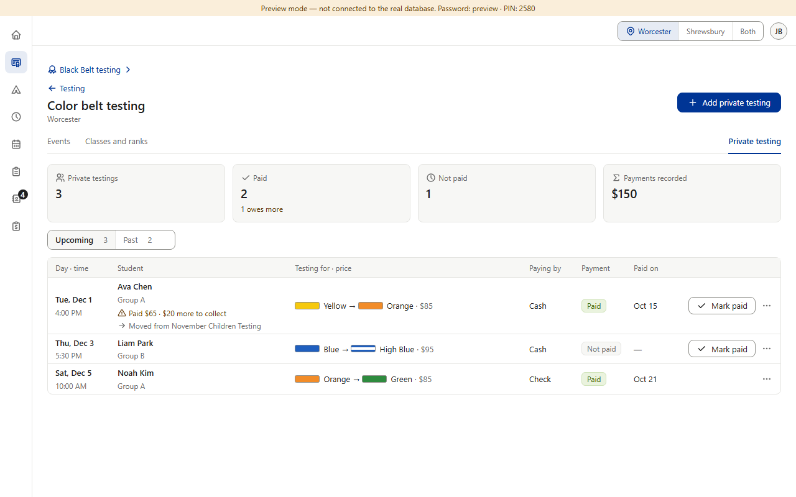
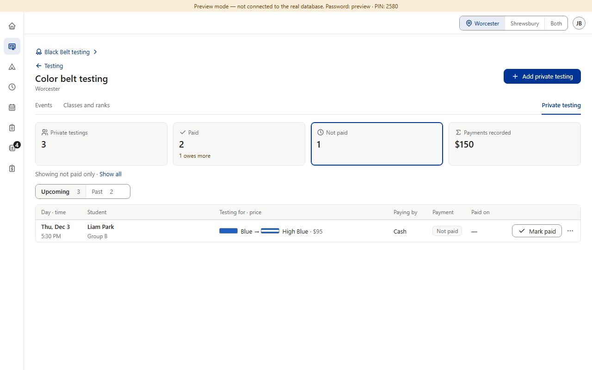
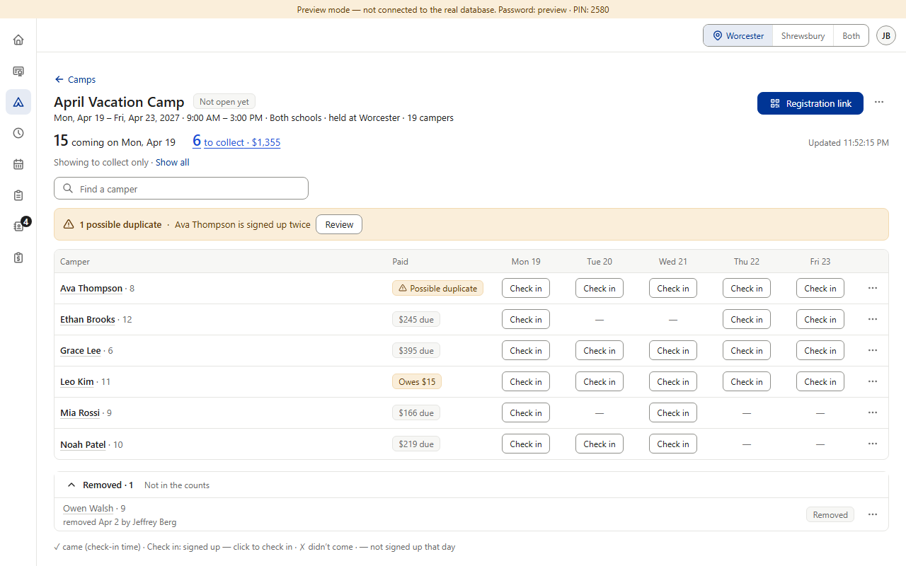

Approved in each section, plus one drift. Rule §8: tapping a count card opens the list behind it. Color Belt's event roster and Star do this, and Black Belt's four cards (Paid in full · Paying on schedule · Late · Not paid — they fit its payment plans) filter too. Color Belt private testing's cards do nothing, although its approval said “a roster like an event's Students tab” (v0.402) — drift. Approved and staying: Camps has one summary line instead of cards (v0.715); Finance's cards jump to their group (v0.207). (Preview screenshots at PC size · fake data)
Today
1. Color Belt event: tap “Not paid” → the card turns blue, “Showing not paid only · Show all”, and only the students who haven't paid stay (here, the three in Little Tiger + White).

2. Color Belt private testing: the same four cards — tapping “Not paid” does nothing.
3. Camps: one summary line instead of cards (approved); its numbers can't be tapped.
Seen in passing (item 16, icons): “Not paid” has a clock icon in Color Belt and Star, but in Black Belt the clock means “Paying on schedule” and “Not paid” is a crossed circle.
Proposed (option B) · and option C

4. B · recommended: private testing's cards work like the event's — “Not paid” → only Liam Park, with the same “Showing … · Show all” line. “Payments recorded” stays a total, as on the event page.

5. C: B, and Camps' “6 to collect” can be tapped too → only the campers who still owe.
Copies what's already there: the event roster's own cards, selected look and “Showing … · Show all” line. Pictures 4–5 are drawn over the real pages; nothing in the app was changed.
Your choice — one question: A · Keep as today.+ no work. − private testing is the one roster whose cards look like the others but can't be tapped; it breaks rule §8. B · Recommended: private testing's cards filter like the event's (picture 4). Private testings = everyone, Paid, Not paid; “Payments recorded” stays a total. Everything else stays as approved. + one habit — tap a number to see those rows; an exact copy of the event roster. − a small build for Color Belt. C · B, plus Camps' summary numbers can be tapped (picture 5). “6 to collect” → only the campers who still owe; “15 coming” → only that day's campers. + the desk finds who still owes during a camp in one tap. − reopens Camps' approved summary line (v0.715); a filtered check-in list can hide a child the desk is looking for (Find a camper still finds them).